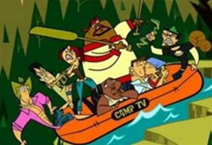
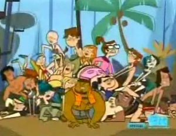

Luz, Drama, Acción
 De: La Frikipedia, la enciclopedia extremadamente seria.
De: La Frikipedia, la enciclopedia extremadamente seria.
De la serie Programas de TV:
¡No, no!¡ESTA TODO MAL!¡Heather esta calva y Lindsay la odia, y a menos de que Duncan planee extrangular a Harold, su brazo esta mal ubicado, ¿Quien hace estas pendejadas?
| Idioma original:
|
Inglés de Canadá
|
| Creador:
|
Un Canadiense
|
| Duración:
|
30 minutos
|
| No. Episodios:
|
algunos
|
| No. Temporadas:
|
es una de las 3
|
| ¿Aún se transmite?:
|
Solo en la tele
|
| Género:
|
Masculinos, femeninos,gays,putos, etc.
|
| Nivel de frikismo:
|
mas o menos
|
| Películas:
|
No
|
¡Habra una 3° temporada!
«No, no, no... ¡Bueno, sí!»
~ Chris McLean pensando si debe haber una segunda temporada o no.
«Nueve salas de estar, nueve banderines, nueve locos cuartos de juego, nueve huevos, uno dos tres cuatro cinco seis siete ocho nueve.»
~ Trent , demostrando que no esta obsesionado con el numero 9.
«¿Podra Owen soportar el desafio mas vomitivo, asqueroso y desgarra tripas de la historia?»
~ Chris preguntandose si Owen vivira con la comida del Chef.
Tras el final de "Isla del Drama" (TDI: Totalmente-Destructor e Imposible) llega la segunda temporada llamada "Luz, Drama, Accion" (TDA: Totalmente-Desquiciado y Asesino), que en su resumen claramente dice que ahora el riesgo de que los consursantes mueran es mucho mayor. Esta comienza gracias a que los anteriores campistas estaban atados por el contrato y fueron obligados a participar, algunos lograron escaparse del programa pero mas de la mitad no lo consigue. Comienza cuando los productores deciden hacer un ultimo capitulo especial reuniendo el dinero de los pasantes muertos y ofreciendoles la oportunidad a los 22 campistas de ganarlo (1 chillion millon de guaraníes dolares), sin embargo, despues de una hora de sacarse los ojos entre ellos, lo unico que consiguieron fue que el maletin donde estaba la plata se cayera al oceano, donde se lo comio un tiburon que en consecuencia lo cago. Tras esto, los concursantes son obligados a volver a participar en el programa y les hicieron creer que el ganador recibiria la suma de dinero perdido anterior mente. En esta ocacion son aprisionados en un estudio de filmacion abandonado que, si nos olvidamos de las ratas que comen humanos y de las arañas que se comen ratas come-humanos, esta mejor que isla anterior en la que no podian dar un paso sin que los atacara un oso. Sin embargo, ahora los desafios son cada vez mas dificiles y mortificantes, por no mensionar que (No se como mierda lo logra) la comida del Chef es mucho, mucho, mucho, mucho, mucho, mucho, [...] mucho, mucho, mucho peor.
 Asi terminaron despues del show, se puede apreciar lo bien que acepta Trent que Gwen haya dejado de ser gotica, a Lindsay apretandose al oficial de libertar condicional de Duncan y a DJ despues de subir unos kilitos.
Nuevos Equipos
Despues de darle nuevamente la bienvenida a los concursantes, Chris organiza dos desafios: En el primero, los campistas deben escapar de un monstruo mecanico controlado por el Chef Hatchet, que si los atrapa los encerrara en un corral inflable para luego violarlos y comerselos vivos. Tras este desafio, Geoff y Bridgette son sodomizados con los cuchillos de cocina del Chef expulsados simultaneamente. En el segundo, deben robarle los cojones huevos a un alienigena (Que es interpretado por Hatchet ya que el muy boludo mato a todos los pasantes y solo el quedaba). En este desafio Gwen y Trent ganan, y Chris los convierte en capitanes de dos equipos distintos (Solo por joderlos).
Iluminadores Gritones
- Duncan: Regresa esta vez con un airesito de asesino, sin embargo, sus verbos favoritos siguen siendo afanar, chorear, chorificar, uzurpar y cualquier otro sinonimo o derivado de robar.
- Gwen: Tras la desepcion con Trent,
se la violo Chris y Heather dejo de ser una gotica buena onda y se convirtio en una gotica corta venas bien puta y asi esta mejor.
- LeShawna: Boluminosa, villera y pandillera como siempre, no deja de ser la distraccion de Harold.
- Harold: Aunque parezca imposible, ahora es todavia mas friki y siempre esta tratando de
follar conquistar a LeShawna con todos esos movimientos friki-ninjas que se sabe (Y que ni aunque se le salieran por el orto podrian ser peores).
- DJ: Debon Joseph, ha dejado de ser un zoofilico que viola a todos los animalitos que encuentra en el bosque para ser
la perra el asistente del Chef en la cocina.
- Heather: Esta calva porque le dio un cancer intratable por el cual se va a morir poco despues de finalizado el programa
(Siiiii, hay que festejar por eso!!!).
- Courtney: Si bien pudo escapar del concurso, los agentes de Chris la atraparon y la regresaron al set
por pelotuda y además porque es medio negra.
Tramoyistas Asesinos
- Trent: Ha regresado, nueve veces mas jebi, nueve veces mas drogado, nueve veces mas guitarrista y nueve veces mas locooo.
- Lindsay: Ahora utiliza por primera vez su 1/4 de neurona y asume la posicion dominante
, perra malcriada, maldita y mandona del equipo, igual que Heather en la temporada anterior.
- Beth: Le quitaron los frenos, por lo que ya no escupe tanto como Silvestre y el Pato Lucas juntos, solo como Silvestre. Se la pasa hablando de su novio imaginario.
- Izzy: Oficialmente se cambio de nombre a caleidoscopio, por lo que podemos deducir que se cambio legalmente de profecion tambien (Ahora ya no es mas una loca de patio, es una loca de azotea). Se sabe que intento quemar vivo a Owen.
- Owen: Esta vez regresa con un apetito voraz, podria comerse todo un banquete fabricado con papel mache y carton (Eventualmente lo hizo).
- Justin: Como en la temporada anterior sus dialogos duraban tanto como un pedo en una media ahora es mas charleta y se la pasa intentando controlar los cerebros de Beth y Lindsay
lo que sabemos que es imposible puesto que no tienen cerebro.
Luz, Drama, Accion: La secuela
Tras ser expulsados en el primer capitulo por pendejos que se follaban en publico, Geoff y Bridgette patrocinan "The Aftermath", una secuela del programa en si en la que participan todos los campistas que lograron escaparse del concurso y los que son expulsados de el. En general, lo que hacen alli es hablar de sus pateticas participaciones y de lo reverendamente hijoputas que son los productores. Todo lo que hacen es burlarse de ellos, blasfemar en su contra y cagarse de risa todo el santo dia. Lo que no saben es que este pseudo-show es en realidad una trampa. Chris tiene un arreglo con la parejita del año para que atraparan a los campistas profugos, poner tambien a los exoulsados fue una habil estrategia para no levantar sospechas. Al final el millon de dolares se lo van a llevar Geoff y Bridgette por asegurarse de que sus "amigos" sean re-capturados, torturados y violados por el resto de sus dias.
Courtney fue la primera en ser llevada de regreso al programa.
Hechos Dramaticos
 Al parecer a los concursantes se les hizo costumbre montar super-orgias bisexuales.
Durante la serie se produjeron nuevos hechos muy dramaticos y eroticos, de ahi salio la palabra "Accion" para el programa, los mas destacados eventos estan aqui.
- Owen, en un acto homo-sexual intento lamersela al Chef sin que este ultimo se diera cuenta, no obstante, el "pajarito" se paro con fuerza y le rompio todos los dientes y la mandibula inferior.
- Aprovechando que Courtney y Trent ya no estaban en la competencia, Duncan y Gwen se convirtieron en grandes amigos y estubieron haciendolo(si no lo sabes eres un pendejo) detras de los arboles y en las letrinas hasta que Gwen fue expulsada, entonces Trent decidio hacerlo con Lindsay, haciendo que Tyler se suicidara, o lo intentara(pero el pendejo no a podido)
- Cuando Courtney se entero de que Duncan le estubo metiendo los cuernos no se resistio a ser llebada de vuelta al programa para si poder darle a Duncan una leccion de integridad.
- Justin se re garcho a Beth para evitar ser expulsado (El pobre sufrio durante 50 minutos, pero el terrible trauma le durara para toda la vida).
- Beth se volvio loca una vez que Justin no le dio mas atencion y se creo un novio imaginario(al final de temporada le pago a un actor porno para que fingiera ser su novio, pero Owen por razones ya sabia lo que era el novio y la descubrieron), solo que este no la acompaña todo el tiempo como lo hace el Duende de los Incendios con Izzy. Al final del programa se llevaran a Beth a un hospital psiquiatrico de maxima seguridad junto con Izzy por si acaso.
- Todo el equipo de los Iluminadores Gritones sufrio una intoccicacion sebera (Aunque no lo crean, no fue culpa de Owen) por los gases de LeShawna y casi mueren, a Izzy se la llevaron de una vez por todas del programa para darle tratamiento urgente
, no porque Chris se preocupara por ella, sino porque una muerte asi en su programa habria llevado los niveles de audiencia a 0.
- El Chef intento matar a todos los campistas a la vez cuando estaban en un submarino, sin emgargo gracias al friki de Harold lograron sobrevivir. A Hatchet ke redujeron su salario en un 0.5% por actuar a espaldas de Chris
porque la verdad nos hacia un favor si los mataba.
Chris y el Chef
Se sabe que la "relacion" que tienen Chris y Hatchet ha "mejorado" a partir de esta temporada ya que han estado en convivencia durante mas tiempo y han trabajado juntos (En otras palabras, han intentado asesinar a los campistas juntos en lugar de hacerlo por caminos separados) y hasta nos enteramos de que la ultima vez que este par de desquiciados se vieron, Chris invito al cine al Chef y al final de la pelicula estos se abrazaron y lloraron, esto indica que ahora son grandes amigos y que comparten todo (Asi es, todo).
Estan tan felices que hasta le pagan 1/2 centavo la hora a los utileros y pasantes.
Vease Tambien o sera traido a este Reality con Chris y el Chef
Enlaces Externos
Autor(es):
- Prototype
- Michael-Myers
- Genericool
- Frikifan 97
- Dancob
- Nadnas
- Tornado-azul
- Volver al futuro 2
- Juceruto225
- REN HOEK
Frikipedia 2005-2016, Licencia
GFDL 1.2 - Extraído por FrikiLeaks